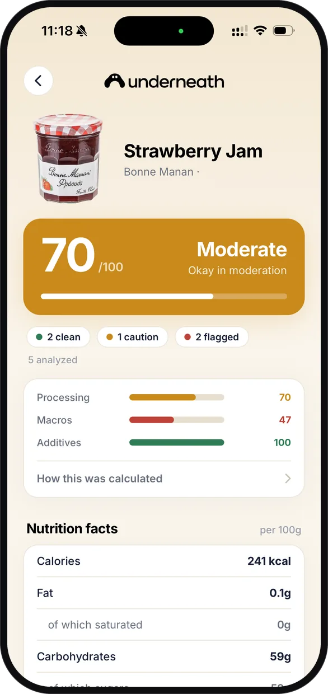
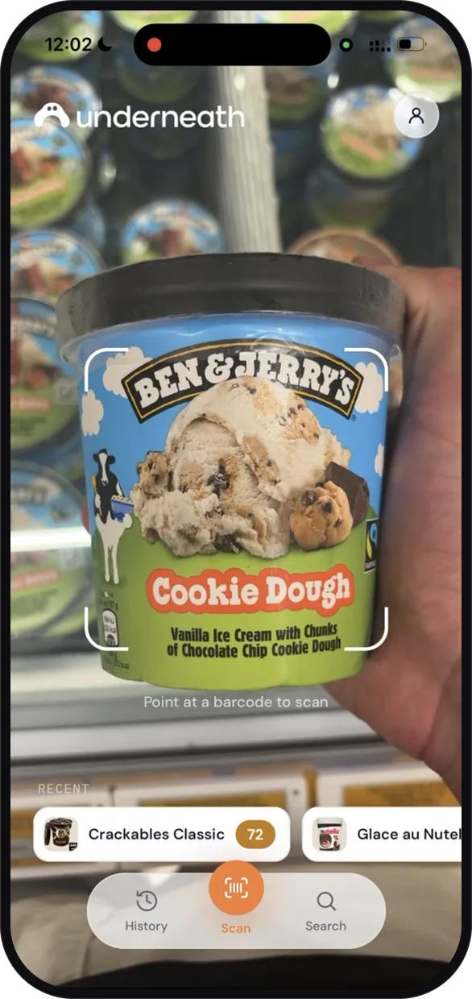
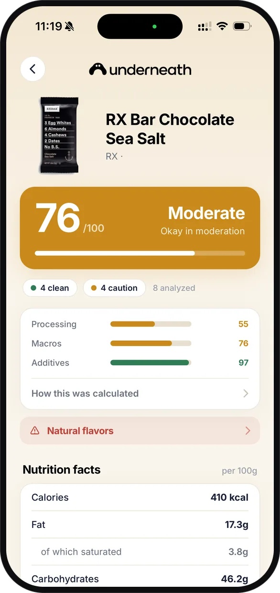
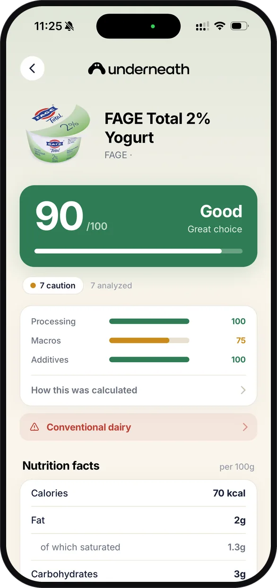

Scan it
Point the camera at a barcode. The number comes back before the thing is in your trolley. No barcode match? Photograph the panel and it gets read, translated and scored anyway.

Scan any barcode and get one honest number out of 100, weighted by how processed a food really is. Not by the claims on the front of the pack.

Nobody reads an ingredients list in an aisle. The claims live on the front, the truth lives on the back in six point type. Underneath reads the back for you.
Point the camera at a barcode. The number comes back before the thing is in your trolley. No barcode match? Photograph the panel and it gets read, translated and scored anyway.

Processing, macros and additives, each scored on its own line, and every flagged ingredient named. The same maths for every product, with nothing a brand can pay to move.

A cleaner product from the same shelf, with its own score beside it, so the swap is a decision you can make standing there.

Left on the App Store and Google Play, quoted as written.
Really good app! The scanner works very well and gives you useful information about what's in your food. The interface is clean and easy to use, and everything feels quick and straightforward. Definitely recommend it!
Took it to the supermarket and it works really well. A lot of the products I bought were not as healthy as I thought... thankfully through the app I found better alternatives
This app really works! It made me realize that i was not eating as healthy as I thought. In a couple of weeks I changed my eating habits for the better. try it!
Very helpful app. Started using it 2 weeks ago and my diet changed instanlty, now its a habit to always check the products i buy with the underneath foos scanning app.
Privacy·Terms·tryunderneath@gmail.com
© 2026 Underneath Ltd. Company number 17312263. Registered office 128 City Road, London, EC1V 2NX, United Kingdom.